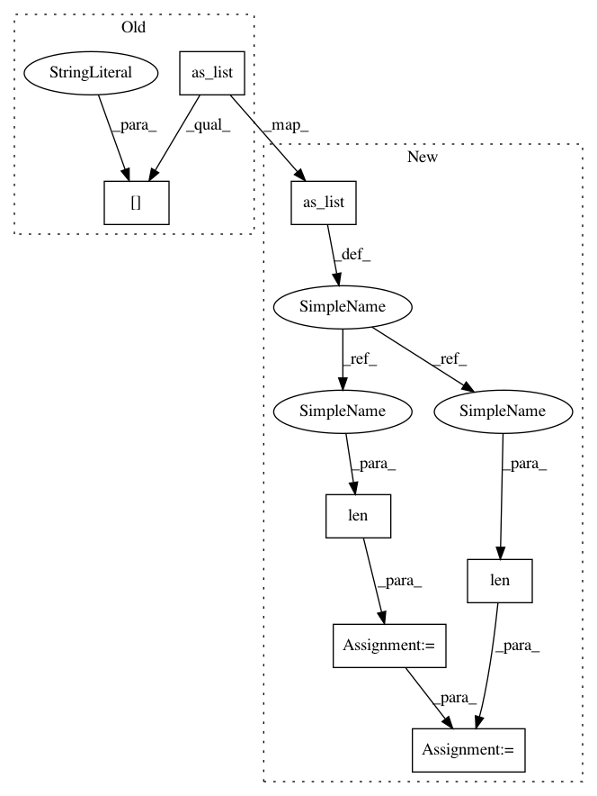

535d15402492fc10579a3211dc83c74f2741cc31,my/tensorflow/general.py,,flatten,#Any#Any#,121
Before Change
if keep == 0:
out_shape = [-1]
else:
out_shape = [-1] + tensor.get_shape().as_list()[-keep:]
flat = tf.reshape(tensor, out_shape)
return flat
After Change
def flatten(tensor, keep):
fixed_shape = tensor.get_shape().as_list()
start = len(fixed_shape) - keep
left = reduce(mul, [fixed_shape[i] or tf.shape(tensor)[i] for i in range(start)])
out_shape = [left] + [fixed_shape[i] or tf.shape(tensor)[i] for i in range(start, len(fixed_shape))]
flat = tf.reshape(tensor, out_shape)
return flat
In pattern: SUPERPATTERN
Frequency: 3
Non-data size: 7
Instances
Project Name: wenwei202/iss-rnns
Commit Name: 535d15402492fc10579a3211dc83c74f2741cc31
Time: 2016-10-23
Author: seominjoon@gmail.com
File Name: my/tensorflow/general.py
Class Name:
Method Name: flatten
Project Name: wenwei202/iss-rnns
Commit Name: 535d15402492fc10579a3211dc83c74f2741cc31
Time: 2016-10-23
Author: seominjoon@gmail.com
File Name: my/tensorflow/general.py
Class Name:
Method Name: flatten
Project Name: NifTK/NiftyNet
Commit Name: 7c8af7a941f49539f2d5eb1b17d61952fc70e2bc
Time: 2017-10-24
Author: wenqi.li@ucl.ac.uk
File Name: niftynet/layer/resampler.py
Class Name: ResamplerLayer
Method Name: _resample_inv_dst_weighting
Project Name: wenwei202/iss-rnns
Commit Name: 535d15402492fc10579a3211dc83c74f2741cc31
Time: 2016-10-23
Author: seominjoon@gmail.com
File Name: my/tensorflow/general.py
Class Name:
Method Name: reconstruct